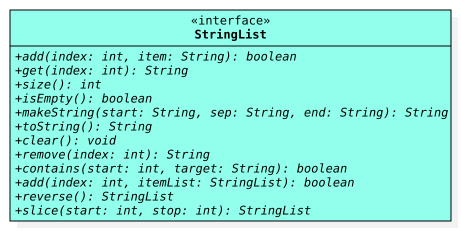

Interface StringList
- All Known Implementing Classes:
OracleStringList
StringList is an abstract data type (ADT) that
defines operations for a sequence of references to non-empty
String objects. Any object that implements
this interface is a string list object
, and each String reference in
the sequence it represents is an item.

StringList
Programmers that use a string list have precise control over the items in
the sequence it represents. They may place or access an item using
an index value (i.e., a
nonnegative integer that denotes a position). If they exist, the index
values for the first and last items are always 0 and size() - 1,
respectively, and a string list that has no items is empty.
Remember, the items of a string list are references to non-empty
String objects. In Java, a reference is either null
or refers to some object. This implies that an item cannot be null.
If you inspect the documentation for any method that inserts an
item into a string list, you will find that a
NullPointerException and IllegalArgumentException
are expected to be thrown whenever there is an attempt to insert null or
an empty string, respectively. A string is considered
empty
in Java if, and only if, its length is
0. A blank string may be inserted
into a string list so long as that blank string is not empty.
Required Constructors
All classes that implementStringList are required to have the
public constructors described below, where ClassName refers
to name of the implementing class (i.e., replace ClassName as
needed).
- Default Constructor
-
public ClassName() -
Constructs an
emptystring list.
Storage and Internal Data Structures
SinceStringList is an ADT, any class that implements this interface
is theoretically free to store its items using any kind of data structure
that the author wants so long as objects of the class all behave like string
lists as documented in the methods of this interface. For example, the class
for one implementaton might use a linked list of nodes to store its items,
while another implementation might use an array. The
OracleStringList class is example of an implementation;
it is provided to illustrate how to use and test string list objects later
in this ADT documentation.
Assumptions
Since many implementations of the interface may exist, this ADT documentation makes no assumptions about any internal data structures that might by used by a particular implementation; it merely communicates how all implementations are expected to behave from an external perspective.String List Size vs. Data Structure Size
Unless explicitly stated otherwise, any mention ofsize
found in this documentation specifically refers to the size of a string list
object and not the size of its underlying data structure. Please keep this in mind,
for example, when observing the conditions for the
IndexOutOfBoundsException in the documentation for
various methods.
The idea that the size of the underlying data structure may be different than the size of the string list may seem foreign to some, but understanding the difference is critical for certain implementations. For example, in a string list that uses an array to store its items, the array might have more elements than the number of items currently in the string list (i.e., the array's size might be bigger than the string list's size); this is usually done to minimize the number of times the the string list's array is resized. In Java, an array object cannot actually be resized, so the verb resize is usually taken to mean the creation of a new, usually larger, array object and the loop(s) needed to copy over the elements from the original array object to the new one.
Examples and Unit Tests
While all of the examples in this section are written usingOracleStringList, you should be able to replace
"new OracleStringList()" with a default constructor call for
any implementation of the StringList interface, including the concrete
ones that you write for your project. The examples provided here
are not exhaustive; you are expected to come up with your own examples
and test them.
Example: New, Empty String List
A new string list issize 0 and therefore
empty. An example of how to test this is provided in
the project description.
We also provide some sample code below:
// setup StringList list = new OracleStringList(); // test by printing System.out.println(list.size()); // 0 System.out.println(list.isEmpty()); // true // test by asserting (requires -ea option when running java) assert list.size() == 0 : "size() is not 0!"; assert list.isEmpty() : "isEmpty() is false!";
Example: Non-Empty String List
After adding three items to a new string list, it issize()
3 and therefore not empty:
// setup
StringList list = new OracleStringList();
list.add(0, "a");
list.add(1, "b");
list.add(2, "c");
// test by printing
System.out.println(list.size()); // 3
System.out.println(list.isEmpty()); // false
System.out.println(list.get(0)); // a
System.out.println(list.get(1)); // b
System.out.println(list.get(2)); // c
// test by asserting (requires -ea option when running java)
assert list.size() == 3 : "size() is not 3!";
assert !list.isEmpty() : "isEmpty() is true!";
assert list.get(0).equals("a") : "get(0) is not \"a\"!";
assert list.get(1).equals("b") : "get(1) is not \"b\"!";
assert list.get(2).equals("c") : "get(2) is not \"c\"!";
Example: No Empty Items in a String List
It is not possible to add anempty string;
the documentation for add(int, String) says that it should
throw an exception if such an attempt is made:
// setup
StringList list = new OracleStringList();
// test by calling
list.add(0, ""); // Exception java.lang.IllegalArgumentException
// test by asserting (requires -ea option when running java)
try {
list.add(0, "");
assert false : "add(0, \"\") did not throw an IllegalArgumentException";
} catch(IllegalArgumentException iae) {
assert true;
} // try
Example: No Gaps in a String List
The out of bounds criteria that is documented in the@throws description
for the add(int, String) method makes it impossible to introduce
"gaps" into a properly implemented string list object:
// setup
StringList list = new OracleStringList();
list.add(0, "a");
list.add(1, "b");
// test by printing
list.add(3, "c"); // Exception java.lang.IndexOutOfBoundsException
// test by asserting (requires -ea option when running java)
try {
list.add(3, "c");
assert false : "add(3, \"c\") did not throw an IndexOutOfBoundsException";
} catch(IndexOutOfBoundsException ioobe) {
assert true;
} // try
Very Important Note
You do not need to write the.java file
for this interface (nor should you)!
A compiled version of this
StringList interface is made available to you in a JAR file that is
distributed alongside the project description. Simply follow the instructions
in that document to get and use the JAR file.
- Author:
- Michael E. Cotterell
-
Method Summary
Modifier and TypeMethodDescriptionbooleanadd(int index, StringList itemList) Inserts multiple items into this string list at the specified index position.booleanInserts an item into this string list at the specified index position.voidclear()Removes all of the items from this string list.booleanReturnstrueifstart >= 0and there exists an item at or after thestartindex that equals thetargetstring.get(int index) Returns the item at the specified index position in this string list.booleanisEmpty()Returnstrueif this string list has no items.makeString(String start, String sep, String end) Returns a string representation of this string list that begins withstartand ends withend, with every string in the string list separated bysep.remove(int index) Removes the item at the specified index position in this string list.reverse()Returns a new string list that contains the items from this string list in reverse order.intsize()Returns the number of items in this string list.slice(int start, int stop) Returns a new string list that contains the items from this list between the specifiedstartindex (inclusive) andstopindex (exclusive).toString()ReturnsmakeString("[", ", ", "]").
-
Method Details
-
size
int size()Returns the number of items in this string list.- Returns:
- the number of items in this string list
-
isEmpty
boolean isEmpty()Returnstrueif this string list has no items. More formally, a string list is empty if, and only if, itssizeis zero.- Returns:
trueif this string list is empty;falseotherwise
-
add
Inserts an item into this string list at the specified index position. If an item was already at that position, then that item and subsequent items are shifted to the right (i.e., one is added to their indices).- Parameters:
index- index at which the specified string is to be inserteditem- item to be inserted- Returns:
trueif this list changed as a result of the call- Throws:
NullPointerException- ifitemisnullIllegalArgumentException- ifitemisemptyIndexOutOfBoundsException- ifindexis out of range(index < 0 || index > size())
-
add
Inserts multiple items into this string list at the specified index position. The relative order of inserted items is preserved. If items were already at that or subsequent positions, then those items are shifted to the right (i.e.,itemList.size()is added to their indices).Instead of inserting items into a string list one at a time, this method enables users to insert multiple items into a string list all at once. Here are some examples:
// first list StringList list1 = new OracleStringList(); list1.add(0, "a"); list1.add(1, "b"); // second list StringList list2 = new OracleStringList(); list2.add(0, "0"); list2.add(1, "1"); // insert second list into first list list1.add(1, list2); System.out.println(list1); // [a, 0, 1, b] // insert modified first list into itself list1.add(1, list1); System.out.println(list1); // [a, a, 0, 1, b, 0, 1, b]
The last code snippet shown above is an example of self-reference; that is, it is a scenario where the source and destination objects are the very same object. This is allowed! Implementers should take special care to avoid accidental infinite loops in situations involving self reference since thesizeof the source string list may change as items are inserted into the destination string list.- Parameters:
index- index at which the specified items are to be inserteditemList- string list of items to be inserted- Returns:
trueif this list changed as a result of the call- Throws:
NullPointerException- ifitemListisnullIndexOutOfBoundsException- ifindexis out of range(index < 0 || index > size())
-
get
Returns the item at the specified index position in this string list.- Parameters:
index- index of the item to return- Returns:
- the item at the specified position in this string list
- Throws:
IndexOutOfBoundsException- ifindexis out of range(index < 0 || index >= size())
-
contains
Returnstrueifstart >= 0and there exists an item at or after thestartindex that equals thetargetstring. If no such item exists, thenfalseis returned. Unlike theaddmethods that throws exceptions when called with bad arguments, thiscontainsmethod simply returnsfalseinstead.- Parameters:
start- the index from which to start the searchtarget- the item to search for- Returns:
trueif there exists anitemat or afterstartsuch thatitem.equals(target), orfalseif there is no such occurrence
-
remove
Removes the item at the specified index position in this string list. Any items in the string list that were after the removed string are shifted to the left (i.e., one is subtracted from their indices).- Parameters:
index- index of the item to remove- Returns:
- the string that was removed
- Throws:
IndexOutOfBoundsException- if index is out of range(index < 0 || index >= size())
-
reverse
StringList reverse()Returns a new string list that contains the items from this string list in reverse order. The returned string list must be an object of the same class as the calling object.- Returns:
- a new string list with items from this list in reverse order
-
makeString
Returns a string representation of this string list that begins withstartand ends withend, with every string in the string list separated bysep. Here is an example, assuminglistrefers to an emptyStringList:String result1 = list.makeString("~", "!", "#"); String result2 = list.makeString(null, null, null); list.add(0, "a"); list.add(1, "b"); list.add(2, "c"); String result3 = list.makeString("~", "!", "#"); String result4 = list.makeString(null, null, null); System.out.println(result1); System.out.println(result2); System.out.println(result3); System.out.println(result4);The output would be:~# nullnull ~a!b!c# nullanullbnullcnull
- Parameters:
start- specified starting stringsep- the specified separator stringend- the specified ending string- Returns:
- a string representation of this string list that begins with
startand ends withend, with every string in the string list separated bysep
-
toString
String toString()ReturnsmakeString("[", ", ", "]"). -
clear
void clear()Removes all of the items from this string list. The string list will beemptyafter this method returns. -
slice
Returns a new string list that contains the items from this list between the specifiedstartindex (inclusive) andstopindex (exclusive). This method does not modify the calling object. Ifstartandstopare in bounds and equal, then the returned string list is empty. The returned string list must be an object of the same class as the calling object. Here is an example, assuminglistrefers to a non-emptystring list with items referring to"a","b","c", and"d":System.out.println(list); // [a, b, c, d] StringList slice0 = list.slice(0, 4); System.out.println(slice0); // [a, b, c, d] System.out.println(list); // [a, b, c, d] StringList slice1 = list.slice(1, 3); System.out.println(slice1); // [b, c] System.out.println(list); // [a, b, c, d] StringList slice2 = list.slice(2, 4); System.out.println(slice2); // [c, d] System.out.println(list); // [a, b, c, d] StringList slice3 = list.slice(1, 1); System.out.println(slice3); // [] System.out.println(list); // [a, b, c, d]
- Parameters:
start- left endpoint (inclusive) of the slicestop- right endpoint (exclusive) of the slice- Returns:
- a new string list with the items from this list from
start(inclusive) tostop(exclusive) - Throws:
IndexOutOfBoundsException- for an illegal endpoint index value(start < 0 || stop > size() || start > stop)
-